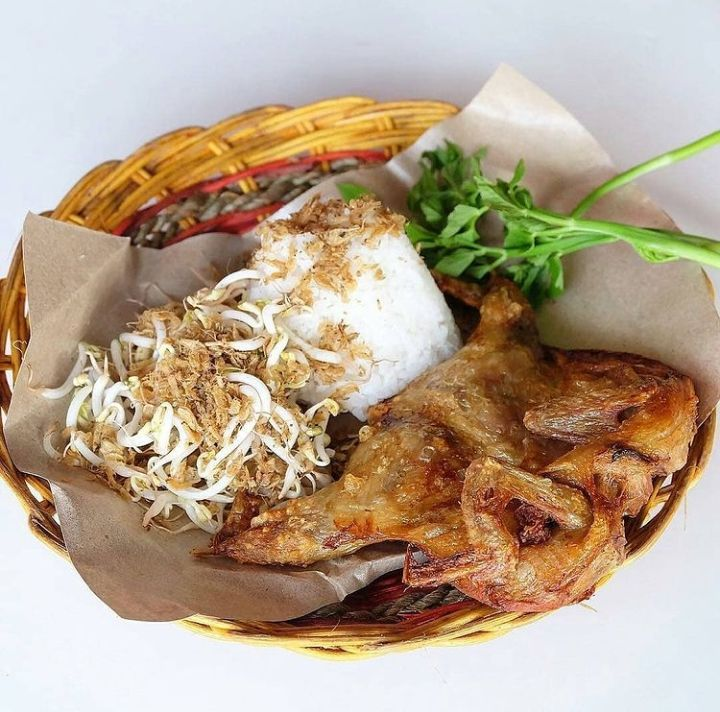
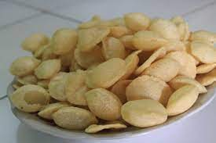
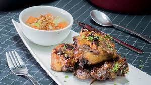
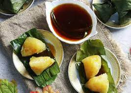

Rekomendasi Makanan Khas Kuningan yang Wajib Dicicipi
Berikut ini beberapa rekomendasi makanan khas Kuningan, Jawa Barat untuk kamu cicipi, diantaranya:
1.Nasi Kasreng

Hidangan yang satu ini berasal dari Luragung, salah satu daerah yang ada di Kabupaten Kuningan.
Tempat ini diklaim sebagai cikal bakal transportasi yang menghubungkan antara Kuningan dengan Kota Jakarta.
2.Ketempling

Makanan yang satu ini mirip dengan jajanan gemblong yang berbahan dasar singkong.
Bedanya, Ketempling ini berbentuk bulat kembung dan kopong di bagian tengahnya.
3.Sop Buntut Bakar

Makanan yang satu ini memiliki cita rasa serta rempah rempah yang digunakan sangat kuat.
Banyak yang terheran heran dengan sajian makanan yang satu ini karena menjadi salah satu makanan yang tidak biasa.
4.Kwecang

Sekilas, bentuk kwecang ini mirip bakcang seperti yang telah dikenal oleh masyarakat luas.
Akan tetapi, bahan yang dipakai untuk membuat kwecang ini berasal dari beras ketan dan air kapur sirih.
5.Tahu Lamping
Tahu Lamping ini dikenal sebagai tahu khas dari kabupaten Kuningan, memiliki cita rasa yang dipercaya lebih nikmat daripada tahu yang sudah populer dari Sumedang.